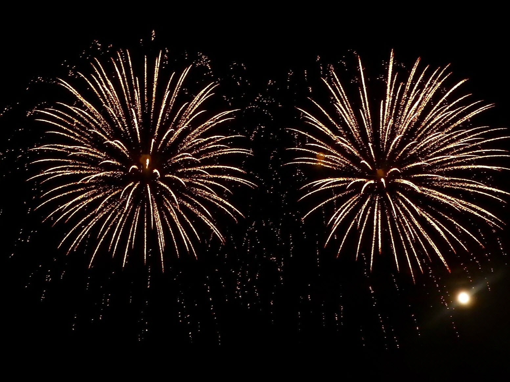

Pendant que la guerre continue de faire rage en Ukraine, Okean Elzy soutient son pays à travers le monde. Le groupe de rock ukrainien fondé en 1994 et porté par sa figure phare, Sviatoslav Vakartchouk, est en train d'effectuer une tournée dans plusieurs pays et passerons très bientôt au festival de Rock en Délire...
Les 4 Fantastiques : qui se cachent derrière ces figures emblèmatiques ?
On le croyait mort depuis 1791 et pourtant, Mozart est là ! Et il n'est pas revenu seul. Beethoven, Bach et Chopin sont également ressortis de leur tombe et se sont convertis ensemble au rock. Après maintes demandes, les 4 Fantastiques, vedettes de cette édition 2022 de Rock en Délire, ont accepté d'être interviewé et on a pu enfin découvrir qui ils étaient réellement...
Feu d'artifice annulé !

Au vu de la circulaire préfectorale du 4 juillet 2022, la décision d’annuler le grand feu d’artifice prévu ce dimanche 10 juillet pour la fin du festival de Rock en Délire a été prise. Par souci de responsabilité et vu les risques très sévères d’incendie, le feu d’artifice est annulé afin de protéger les forains et la forêt qui entoure le site. Ce qui n'empêchera pas certains, fâchés par cette décision, de faire péter eux-mêmes leurs pétards...